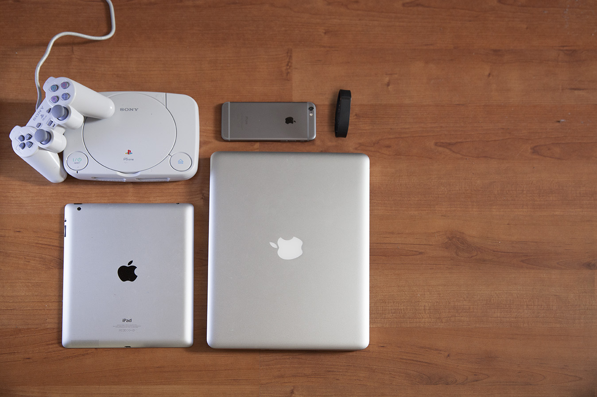
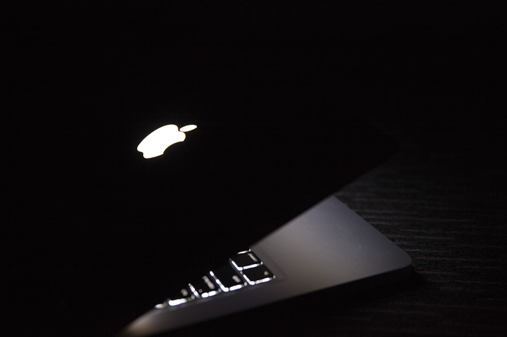

CONTOURCULTURE

Aaron de Leon
Technology is changing you are you ready?
The impact of technology has on us as individuals
Technology, we’re surrounded by it ever day, you’ve probably seen or used some form of technology today but the question is how has technology impacted who we are as people? It is likely we all own and have seen at least one form of technology today your phone, tablet, computer, tv or your car to name a few. Though technology is not just limited to those items I’ve just listed but technology is in fact apart of so much more. It has gradually become more and more apart of our lifestyle and continues to advance each day.
This grey little Playstion has provided forms of entertainment and communication that was immersive and entertaining to me at the time, this had ultimately resulted in some negative impacts. The console was perfect to keep me entertained but at what cost? It often took up a lot of my time; it was time that I would spend outside riding the bike and running around in the backyard.
Although I had found a new means of entertaining myself it ultimately saw a decline in how active I was and I’d often feel sleepy during the day. So what was the solution? It was time for change I made the decision to cut back on the time I spent playing the playstation and did more active activities outside because I knew the negative affect it was having on myself.
To help people live healthier, more active lives by providing the data, inspiration and guidance to reach their goals.

With this decision to be more active raised my interest in fitness technologies how could I make sure that I had done enough? The search began and the rise of fitness technologies is a strong trend that technology companies have certainly noticed. This trend of individuals becoming less active developed the market for fitness-based technology.
Fitness and health based technology such as the Nike Fuel Band, Fit Bits and your smart watches are now tracking your activity during the day. These wearable fitness technologies in the combination with smart phones and computers provides an analysis of how well individuals have done in terms of their activity.
Burning off calories; distances covered are all apart of getting individuals more motivated the data gathered can be used ultimately to optimize health. My experience with the Fit Bit Flex definitely helped me become more active with the help of statistics I was able to track how much more I had to active I had to be for the day. Some of the complaints that I would have is that the reliance on a smartphone to constantly track your progress.
What a computer is to me is the most remarkable tool that we have ever come up with. It’s the equivalent of a bicycle for our minds.
Smartphones, Tablets and Computers they all seem to link together. These devices are able to do many things, you can call, text, take photos, watch videos as well as many other practical purposes. They provide a platform that is able to share, view and create content.
The experiences and knowledge gained are much more accessible in the digital world of today. Online sites such as Lynda, Vimeo, Youtube, Facebook and Twitter we can connect through these devices to educate and socialise digitally no longer is there a barrier of having to travel distances just to educate and socialise. All this is great and all but are we falling into the trap again of being too heavily reliant on these devices?
Handwriting for example I’ll admit my own handwriting isn’t the greatest and using these devices with keyboards instead of using a pen haven’t help in the slightest. Has technology taken over in a way that we can completely say goodbye to the pen and paper? I’d argue no maybe it’s just me but when I grab a pen and paper it feels more natural possibly because I’ve been taught that way during the earlier stages of life and haven’t fully grasped writing digitally through
Technology, it has grown at such as rapid pace and still amazes me how far it has come over the many years. With innovation will always raise new problems but these problems can be solved. I’d hope for it to keep going as it finds better ways to help us even greater with our lives today. I’m excited to see what the future holds, the new experiences and ways we educate ourselves will only further shape who we are as individuals.